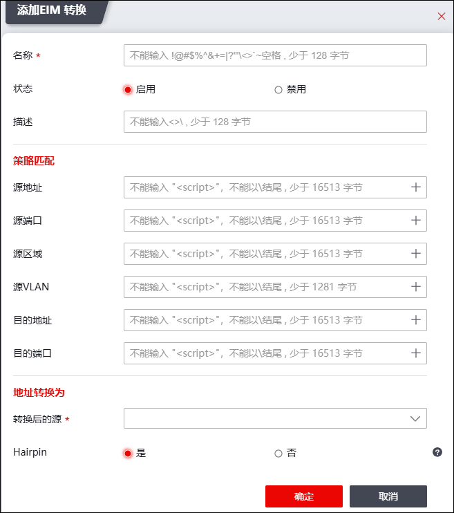

EIM转换是一种特殊的源地址转换，用于P2P场景中外网主机通过映射后的NAT地址主动连接内网主机。配置EIM转换后，防火墙在进行源转换过程中，创建一个EIM表项用于记录地址和端口的转换关系（内网地址和端口<-->NAT地址和端口），当开启Hairpin NAT属性后，允许外网主机向NAT地址和端口发起的新建连接根据EIM表项进行反向地址转换，当不开启Hairpin NAT属性时，则不允许外网主机对映射后的NAT地址和端口进行反向连接。Hairpin NAT同时对报文进行源地址和目的地址的转换。Hairpin NAT支持指定和非指定完全靠动态的形式进行回流的两种回流方式。Hairpin NAT支持P2P组网模式，即位于内网侧的用户之间通过动态分配的NAT地址互访。
Hairpin NAT功能通过EIM转换的NAT方式实现，具体配置操作如下：
| 步骤1 | 选择 。 |
| 步骤2 | 点击“ ”，弹出添加NAT规则窗口，激活“EIM转换”页签，如下图所示。 ”，弹出添加NAT规则窗口，激活“EIM转换”页签，如下图所示。 |

在添加EIM转换规则时，各项参数的具体说明如下表所示。
参数 |
说明 |
|---|---|
名称 |
必填项。不能输入!@#$%^&+=1?1<>'~空格，少于128字节。 |
状态 |
状态可选项：启用、禁用。 |
描述 |
输入该规则的描述信息，不能输入<>\，少于128字节。 |
源地址 |
配置数据报文的源地址应满足的条件。 点击下拉列表选择已设置好的地址对象，或者点击『添加』，新建地址对象，关于地址对象的配置请参见 地址。 |
源端口 |
配置数据报文的源端口应满足的条件。点击下拉列表选择已设置好的服务对象，或者点击『添加』，新建服务对象，关于服务对象的配置请参见 服务。 |
源区域 |
配置数据报文的源区域应满足的条件。点击下拉列表选择已设置好的区域对象，或者点击『添加』，新建区域对象，关于区域对象的配置请参见 区域。 |
源VLAN |
配置数据报文的源VLAN应满足的条件。点击“+”选择已设置好的VLAN对象，或者点击『添加』，新建VLAN对象，关于VLAN对象的配置请参见 VLAN。 |
目的地址 |
配置数据报文的目的地址应当匹配的条件。点击下拉列表选择已设置好的地址对象，或者点击『添加』，新建地址对象，关于地址对象的配置请参见 地址。 |
目的端口 |
配置数据报文的目的端口应满足的条件。点击“+”选择已设置好的服务对象，或者点击『添加』，新建服务对象，关于服务对象的配置请参见 服务。 |
源地址转换 |
选择转换后的主机地址、地址范围对象、子网对象或地址组对象。 说明： 1）选择主机地址对象时，表示将源地址固定映射为某一合法IP地址； 2）选择地址范围和子网对象时，表示将源地址动态映射为某一网段或某一地址范围的地址。 |
源端口转换方式 |
设置源端口转换方式，EIM转换的源端口转换状态只支持通过eim表项进行转换。 如果nat策略配置了eim模式，则在pat方式的动态转换过程中首先会创建一个会话表，然后创建一个eim表项记录地址和端口的映射关系（内网地址端口和转换后的源地址和源端口）。该表项依赖会话，相关的所有会话老化后该表项也老化。 |
HAIRPIN属性 |
设置是否开启回流处理开关；开启后，可以实现静态回流的路径指定及报文转换功能。 |
| 步骤3 | 点击【确定】按钮完成NAT规则的配置。 |